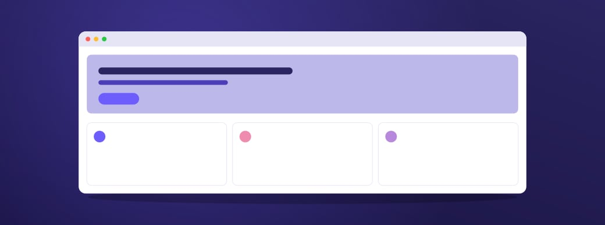

Loved by product teams
We never sell or share your data. Lumen runs without cookies, stores data in the EU or US region you choose, and lets users opt out with a single call.
Start free with 10,000 tracked users a month. Paid plans are priced by usage, not seats, so everyone on your team can look at the numbers.
Simple, usage-based pricing
Most analytics tools hand you a hundred charts and leave you to work out what they mean. Lumen starts with your questions, such as why did sign-ups dip on Tuesday, and answers them with the events that explain it.